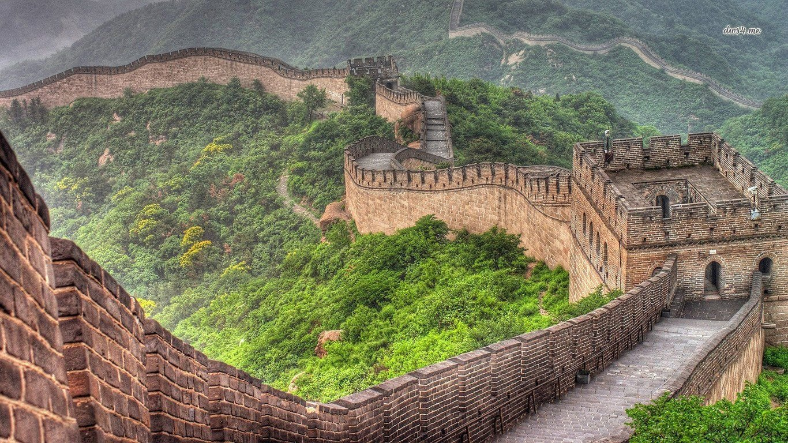
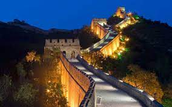
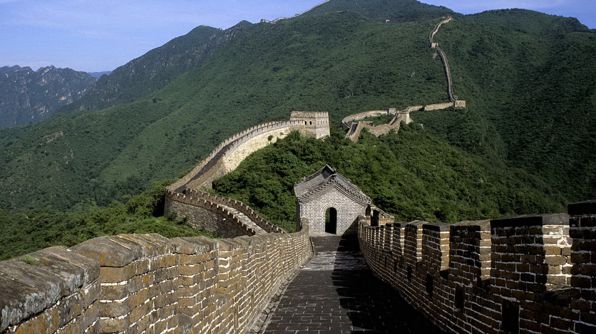
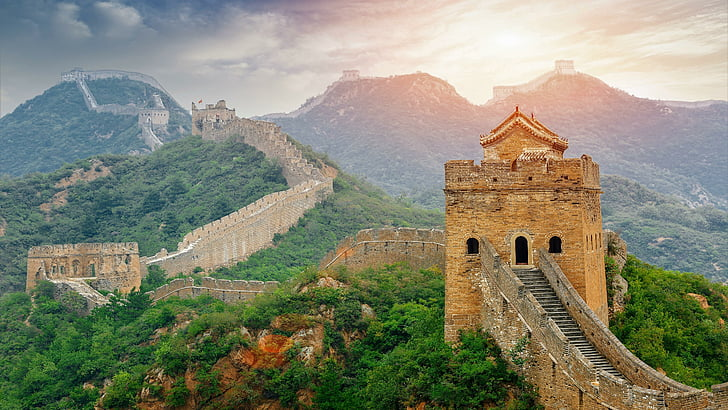

|The Great wall of China
|The Great wall of China
The history of the Great Wall of China began when fortifications built by various states during the Spring and Autumn (771–476 BC) and Warring States periods (475–221 BC) were connected by the first emperor of China, Qin Shi Huang, to protect his newly founded Qin dynasty (221–206 BC) against incursions by nomads from Inner Asia. The walls were built of rammed earth, constructed using forced labour, and by 212 BC ran from Gansu to the coast of southern Manchuria. Later dynasties adopted different policies towards northern frontier defense. The Han (202 BC – 220 AD), the Northern Qi (550–574), the Jurchen-ruled Jin (1115-1234), and particularly the Ming (1369–1644) were among those that rebuilt, re-manned, and expanded the Walls, although they rarely followed Qin's routes. The Han extended the fortifications furthest to the west, the Qi built about 1,600 kilometres (990 mi) of new walls, while the Sui mobilised over a million men in their wall-building efforts. Conversely, the Tang (618–907), the Song (960–1279), the Yuan (1271–1368), and the Qing (1636–1912) mostly did not build frontier walls, instead opting for other solutions to the Inner Asian threat like military campaigning and diplomacy. Although a useful deterrent against raids, at several points throughout its history the Great Wall failed to stop enemies, including in 1644 when the Qing troops marched through the gates of the Shanhai Pass and replaced the most ardent of the wall-building dynasties, the Ming, as rulers of China proper.
Before the use of bricks, the Great Wall was mainly built from rammed earth, stones, and wood. During the Ming, however, bricks were heavily used in many areas of the wall, as were materials such as tiles, lime, and stone. The size and weight of the bricks made them easier to work with than earth and stone, so construction quickened. Additionally, bricks could bear more weight and endure better than rammed earth. Stone can hold under its own weight better than brick, but is more difficult to use. Consequently, stones cut into rectangular shapes were used for the foundation, inner and outer brims, and gateways of the wall. Battlements line the uppermost portion of the vast majority of the wall, with defensive gaps a little over 30 cm (12 in) tall, and about 23 cm (9.1 in) wide. From the parapets, guards could survey the surrounding land. Communication between the army units along the length of the Great Wall, including the ability to call reinforcements and warn garrisons of enemy movements, was of high importance. Signal towers were built upon hill tops or other high points along the wall for their visibility. Wooden gates could be used as a trap against those going through. Barracks, stables, and armories were built near the wall's inner surface.
While portions north of Beijing and near tourist centers have been preserved and even extensively renovated, in many other locations the wall is in disrepair. The wall sometimes provided a source of stones to build houses and roads. Sections of the wall are also prone to graffiti and vandalism, while inscribed bricks were pilfered and sold on the market for up to 50 renminbi. Parts have been destroyed to make way for construction or mining. A 2012 report by the National Cultural Heritage Administration states that 22% of the Ming Great Wall has disappeared, while 1,961 km (1,219 mi) of wall have vanished. More than 60 km (37 mi) of the wall in Gansu province may disappear in the next 20 years, due to erosion from sandstorms. In some places, the height of the wall has been reduced from more than 5 m (16 ft 5 in) to less than 2 m (6 ft 7 in). Various square lookout towers that characterize the most famous images of the wall have disappeared. Many western sections of the wall are constructed from mud, rather than brick and stone, and thus are more susceptible to erosion. In 2014 a portion of the wall near the border of Liaoning and Hebei province was repaired with concrete. The work has been much criticized.
| Pictures | |
|---|---|
|  |  |
|  |  |
| Videos | |